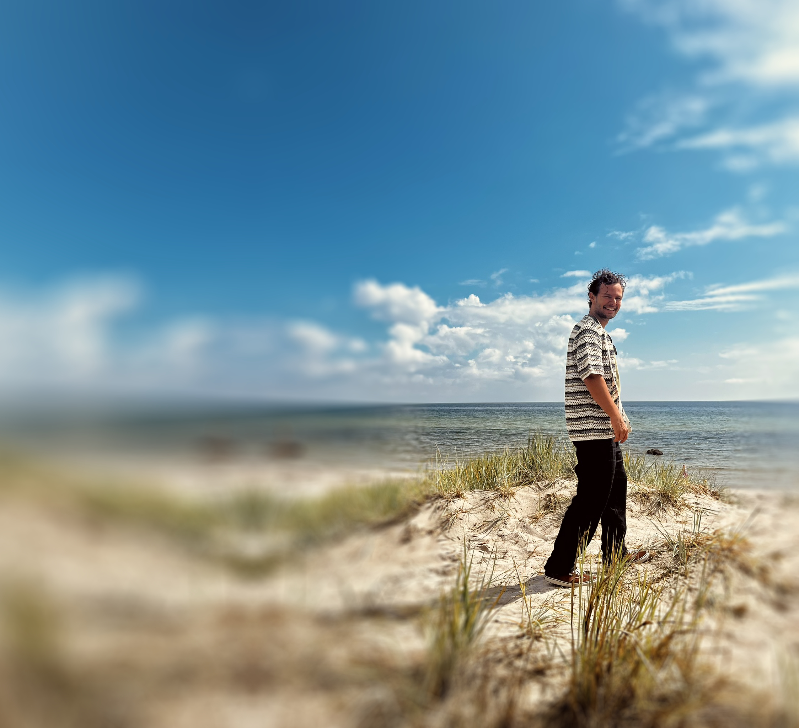

Composer for visual media
Music for
Stories.
Original scores shaped around
story, emotion & character.
Selected music
A few places to begin.
Scored projects
For the Screen.
Selected work composed to picture.
About
Finding the musical voice of a story.
I am a composer and psychologist with degrees in Psychology and Media Composition & Orchestration.
I compose for stories across a wide range of visual media. Alongside my creative work, I am pursuing a doctorate in psychology, researching how the human brain perceives timbre and auditory scenes.
Contact